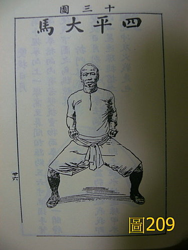
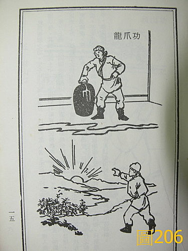
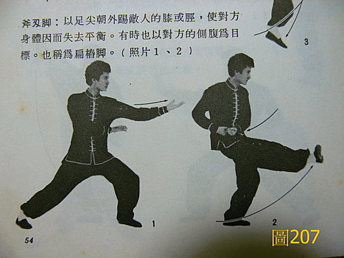
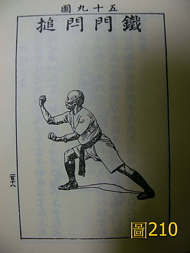
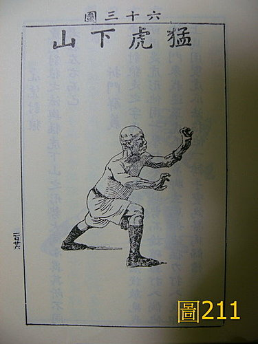
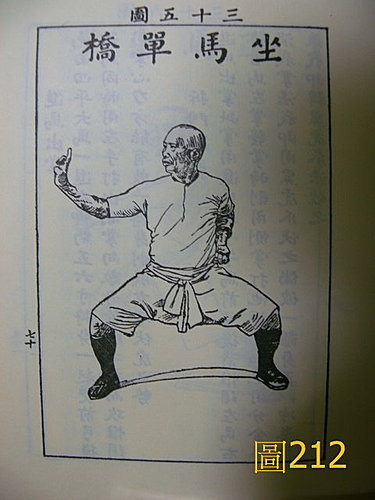

脈理醫理學 54：脈合按摩導引
作者：陳建元
或問：陳老師您好，我知道您習內外功近30年，而習拳之人都會拉筋、拍打，對這些應該都不陌生，而最近醫行〤〤一書流行，坊間出現拉筋、拍打等療法，黃帝內經說：「筋長一寸，壽延十年」，一時蔚為風尚，傳說可以治百病、千病，得自於民間異人，但後來推廣者的原創老師朱醫師卻出現了〈自身有重病肝癌，靠西醫換肝〉，糾正可以治百病、千病的這種說法，只說能健腿強腰而已，其他只是吹噓而已，而電視上的中西醫專家學者也出來呼籲說沒有根據，不知道老師您的看法如何？
答：
醫學書籍有兩種，一種是寫給大眾看的科普軟性讀物，一種是寫給專業醫師看的專業書籍，科普讀物不嚴謹，通常會加入文學渲染、訕動手法來引人注意，就像用一個放大鏡，把其中的某一個點，特意的放大再放大，讓它成為一個「賣點」，如果真的有興趣的話，要往專業書的方向找，才能看到真正的樣貌。
生病還是要看醫生，僅是單純的拉筋、拍打，很難替代正規醫療，拉筋、拍打都是中醫「按摩導引」其中的部份內容，而中醫的按摩導引是有自己的架構的，回歸專業書籍（找武術氣功類的書籍即有資料）或醫書來看才是正確的，一步一腳印要踏實，不要誇大渲染，更不要什麼事情都扯到「大道佛理」的頭上，誤導入玄虛中去，大道至簡沒有錯，但這個簡字，不是簡陋、隨便，而是真誠、踏實。西醫有很多問題固然沒錯，但很多事情並非非黑即白，自己倡說的立論要有根底，踏實不誇大才是發揚中醫之道。
1. 拉筋拍打按摩導引自古有源流：
按摩導引自古有源流，拉筋拍打只是其中的部分動作，從馬王堆的導引圖、宣導舞《呂氏春秋‧古樂》、吹咰呼吸、吐故納新、熊經鳥伸【按：熊經鳥伸即「五禽戲」】《莊子‧刻意》、《諸病源候論》（隋‧巢元方）中記載的各式按摩導引、《千金要方》（唐‧孫思邈）的按摩法、調氣法諸篇、宋朝的《雲笈七籤》（宋‧張君房）、明朝出來的《易筋經》（明‧紫凝道人，少林寺的拳禪合一大多出於此書）‥‥‥琳瑯滿目，蔚為大觀，《內經》：「中央者，其地平以濕，天地所以生萬物也眾，其民食雜而不勞，故其病多痿厥寒熱，其治宜導引按蹻。」可知這是五種治法其中的一種，專門用來對付那些不運動的人，而《金匱》：「四肢九竅才覺重滯，即導引吐納，針灸膏摩，勿令九竅閉塞。」可知此類功法可收強體健身之效。按摩導引即今日體操、氣功、伸展操、運動療法這些的混合體，但和今日西洋運動有一個特別不一樣的地方，就是在功法上，特別注意呼吸、吐納的配合鍛鍊。
2. 拉筋柔軟運動普遍存在各種運動中：
拉筋柔軟運動則普遍存在各種運動中，有著更多的樣貌，不同的拉筋運動讓更多不同的肌肉群拉鬆（讓肌肉更有延展性，可避免受傷，請參考武術 39：一些拉筋的資料）。 拉筋時要用自己的身體來感受，大腿下的肌肉群和背部的肌肉群是相連接的，不用凳子才能讓身體自由的伸展開來，用一個凳子來拉，那樣子反而比較像是西醫的復健，因為躺下的時候，背部的肌肉是受到壓抑的情況，反而使身體不能自由的伸展開來，所以你會看到各種會大量拉筋的運動（如武術、舞蹈），沒有人會躺在機器上面做，因為不是在做局部的復健，而是在做身體全面性的伸展。
拉筋時要適量，不是說越痛越好，酸到微痛的程度還好，再上去就要停止了，如果貪功求快，用力硬拉，扯傷了以後會帶一個病。這也不是什麼「縮筋」的現象，而是「用進廢退」的身體自然機制而已，譬如當你天天做伏地挺身一陣子後，你手臂的2、3頭 肌會鼓大起來，但當你一陣子沒做後，肌肉也會自動消失（因為用不到，身體覺得沒有繼續存在那邊以增加負擔的必要，所以會自動消滅），拉筋也是同一原理，當你練武術、舞蹈時，需要身體肌肉較大的伸展範圍而天天練的時候，自然會拉得開，但一陣子不拉後，自然會「用進廢退」，並不適合創造出一個「縮筋」的名詞來套在頭上。
3. 為何單純的拉筋運動不能治百病：
拉筋柔軟運動對現代人是適合的，因為現代人多坐少動，拉筋運動會伸展和強化各肌肉群，這對局部筋骨方面的疾病，事實上是有幫助的，而對現代人多坐少動者，起來活動活動筋骨，當然幫助更大，運動能提高身體素質的好處本來就很多。
但和中醫的經絡學說扯在一起，說可以治百病，這則是亂套了。經絡現象不是這樣子在運用的，經絡上有穴位，穴位有放大鏡的功用，所以治病下手一定要從穴位著手才明顯（不然的話，就沒有必要標明穴位、非穴位的必要了。一些局部筋骨肌肉的問題，直接從筋骨肌肉論治就可以了，這邊先不討論），穴位有補、瀉、通等功用，醫道的源流，必然要先學會把脈問證，才能分析出病機之所在，然後選穴或補或瀉或通，自然效果明確，若是做不到這點，只是在經絡上到處亂敲亂打，根本得不到效果，更沒有所謂的6條經絡在腿上，只要我們拉筋，就可以「地毯式的轟炸」而治百病，這是不可能的遐思，遐思來自於對經絡特性的不瞭解（就像手上也有6條經絡，但整天拍手也無法治百病一樣），就像我們泡熱水澡，整個身體浸在熱水中，12條經絡通通受熱貫通，所以可治百病？請按摩師按摩全身，12條經絡都有按摩到，所以可治百病？這是不可能的，不用說拉筋、敲打、泡溫水、按摩不可能，就是你用針把身上12經361穴一律同時都插滿了，保證也無法治病！為什麼？因為經絡穴位是有特性的，一次下那麼多針，身體的反應機制會紊亂掉，根本搞不清你到底下了什麼指令。譬如醫感冒，把脈問證判斷病機，是風寒就從風寒醫，是風熱就從風熱醫，是風濕就從風濕醫，是實就從實醫，是虛就從虛醫‥‥‥，藥只下幾味，針只選幾穴補瀉，這樣治療是沒問題的，但如果你把感冒十幾個型，各選一成方，一起加起來給患者吃（風寒 + 風熱 + 風濕 + 實 + 虛 + ‥‥‥）， 這樣大包抄反而治不了病，看起來是每一種型都有顧到，其實互相掣肘，互相抵消，哪有治病的道理？所以說，單純隨意的拉筋按摩拍打，能強化局部筋肉經絡，多少治療相對應的局部筋肉毛病，這是可行的（基於一個通字），但若套經絡學說，說隨意敲打就能治百病，這是說不通的。（百病不只一個「通」字的問題，更有虛、毒、痰、積、水‥‥‥等30幾個字的問題。）
4. 為何單純的拍打運動不能治百病：
拍打刮痧和上面的拉筋也類似，事實上，疾病必有病機，要先有能力查脈證，先分析出病機何在，才能決定要拍打刮痧何處何穴和補瀉手法，否則也僅是幫忙局部流通氣血而已，並無能力溯回內臟疾病，而事實上不管針灸、拍打、點穴、刮痧‥‥‥，各種治病法，和用藥的辨證論治是一模一樣的，也一樣要劃出脈圖來比對才清楚， 你今天針灸、拍打、點穴、刮痧這個地方，下次脈證變了之後，就是按脈證上的轉變，針灸、拍打、點穴、刮痧其他的部位或穴位，而同時補瀉的手法也必須照著改變，並不是照著一成不變的手法，天天拍打固定部位，那和中醫的辨證論治是有距離的。
5. 古代導引按摩以意、氣、形、勢合一為正宗（如此效果才會明顯），強筋骨必先治內臟是通則，外練筋皮骨，內練一口氣是訣竅：
「筋長一寸，壽延十年」，這不是《內經》中的話，倒是拳諺中有類似的話，「筋長一寸，力強三分」、「寧願筋長一寸，不願肉長三分」。 筋長一寸，表示是有運動訓練的人，身手矯健，自然長壽，現代統計有運動習慣的人，老化慢，平均壽命會長幾年，這也沒問題，問題是古代拳諺中的筋長一寸，並不是指硬生生的把我們大腿的肌肉群拉長，就能對應長壽，這不是這樣解釋的。在武術中，拉筋（柔腿）後還要遛腿（踢腿的意思），故有〝只壓不遛不中用、只遛不壓笨如牛〞、〝打拳不遛腿，到老冒失鬼〞的說法，身手矯健並非只是靜態的拉筋（柔腿）可得，還需要配合動態的踢腿訓練（一動一靜，先求軟後求硬。請參考武術 40：一些踢〈遛〉腿的資料），才能手腿靈活，身手矯健，相反的，我們看到許多跳芭蕾舞的，她們的拉筋動作非常嚴格，要求比武術高太多，筋長5寸都有，柔軟有餘，卻也看不到身手矯健，生命長壽，故也不宜把筋長和壽命劃上等號，此筋長者，是指有全面運動訓練者，壽命平均較長的意思。
古代的導引按摩，皆以意、氣、形、勢合一為正宗（如此效果才會明顯），也就是除了拉筋拍打混合在內之外，還要配合動作和吐納呼吸，強筋骨必先治內臟是通則，外練筋皮骨，內練一口氣是訣竅，〝外壯必根於內壯，設未及充周，馳意外走、散於四肢，不惟外壯不全，而內壯亦屬不堅，則兩無是處矣〞〈清‧周述官‧增演易筋洗髓內功圖說。中國古代密傳氣功‧北京科學技術出版社〉〝凡練習各種功夫者，不論內外，先以凝精故神，排除雜念為主，使外魔不侵，內邪遠引，使克有成，於是治臟之法尚矣。治臟者，即調和內臟，使有病者癒其病，無病者固其神，澄心賽氣，專意一志，然後練功，可收奇效，此法12段錦中論之最詳，又有〝六字歌訣〞（軟硬功練習法〈古書善本〉‧靈空禪師著‧華聯出版社 ）。
由是可知，你要按摩導引提高身體的素質水平，必從治內臟下手，而坊間所謂的拍打能貫通12經絡，這類武俠劇的說法是有問題的，12經絡根值於五臟六腑，而練內功又根植於丹田氣，以靜養為本，養氣、服氣、吞氣以壯丹田氣，再配合揉摩臟腑散丹田氣於五臟六腑，臟腑自壯，行之有餘，再散及皮膜筋肉骨而外壯，此是大要也，設臟腑、丹田氣不壯，12經絡如無根之花木，豈不槁矣！還能通到那邊去？丹田氣不壯能轉周天？臟腑氣不壯能散及12經絡？絕無此理，很多人的說法是受武俠劇的影響，開口就是通12經絡，根本不知章法何在？人體是以臟腑為中心，非以12經絡為中心。
每一種氣功導引功法，都有其特定鎖定要治療或想強化的部位，沒有一種功法是可以包治百病的，選什麼動、靜功法來練，都是依辨證論治的實際情況而定，而不知道外壯必先根植於內壯，不練內壯，只選些類似西洋體操，徒作外面的拍拉牽引動作，與中醫古先聖所倡導之按摩導引心法，相去實遠。以下是一些歷代的按摩導引資料：
6. 藥能治「疾病」，按摩導引能「提高素質水平」，這是兩者最大的不同，醫者詳觀脈證而後知道取捨：
用藥和按摩導引，兩者在本質上有區別，藥能治「疾病」，按摩導引能「提高素質水平」，這是兩者最大的不同，醫者詳觀脈證而後知道取捨，有些地方用藥能，但按摩導引做不到，有些地方按摩導引做得到，但用藥做不到，故兩者可互相配合。治病是用藥的專擅，而提高素質卻是按摩導引的專擅，藥是用來治病的，譬如一個人有哮喘而無法跑步，這是疾病，用藥可治療哮喘，但哮喘好了之後，如果說100公尺跑18秒，那你要用藥來調整，變成以後100公尺跑15秒，這是辦不到的，人體素質的提升，必有賴於體操運動，相同的，藥可治療手臂骨折，但舉重要由80公斤上升到100公斤，這就必賴於體操運動才能提升素質。按摩導引等運動功法，可以提高患者的整體素質或局部素質，藉此可補充用藥達不到的範圍，或讓體質素差不容易受藥者（如林黛玉型弱不禁風者），更容易受藥。
【舉例 】：
1. 站馬步穩定膝蓋晃動
譬如有的運動員膝蓋受傷，後經中西醫治療數個月，數個月後損傷已復原，唯有一個後遺症沒解決，覺得膝蓋好像不穩固有會晃動的現象，但不腫不痛，功能上也沒問題，以上是外證，假設把其脈，諸脈尚可，尺脈也尚可，那在這種情況下，就不是肝腎不足導致而筋骨不壯的問題，說它是病，也不算病，說不是病，卻又困擾，大抵從局部加強膝蓋筋骨的素質是可行的，多練〝四平大馬〞，徐徐呼吸內養，初站3分鐘，漸漸站到10分鐘以上即可，因為加強局部，常常在半個月左右，已經可以使局部不晃動。〈圖209〉《虎鶴雙形拳‧林世榮著（黃飛鴻的徒弟）‧綜合出版社》

2. 龍爪功加強指力
譬如有些年紀較大的書法家，常常會訴說手指退化寫字無力，寫毛筆的力道不如年輕時，在這種情況下，一般要先排除〝輕微中風〞或〝短暫性腦缺血發作〞，假設把其脈，諸脈沒問題，外候也沒問題，則這種退化，是一種自然的退化老化，並非藥物可治，當用加強局部的方法，譬如練〝龍爪功〞加強指力之類，用一酒罈，酒罈如掌大，配合呼吸運氣，用五指扣罈嘴先抓空罈上提，後則漸漸加水入罈中使罈變重，如法訓練，2～3個月內，也可收到指勁增加的效果。〈圖206〉《軟硬功練習法‧靈空禪師著‧華聯出版社 》

3. 用斧刃腿修正腳裸容易內翻扭傷的毛病
譬如年輕人練跆拳道，常常練側踢，而側踢是用腳刀踢，腳心則向下向內回勾，踢久之後，有一個問題，就是走路時，腳裸常常會內翻而扭到，像這種情況下，是因為腳的外側有筋肉，內側也有筋肉，只訓練外側筋肉而不練內側筋肉，就好像把一側的橡皮筋拉長了，而另一側沒拉，故有此弊，說它是病嘛，也不是病，說它不是病嘛，常內翻扭到也是困擾，局部的矯正法，加練〝斧刃腿〞最快，蓋斧刃腿是練內側筋骨的方法也，以後練幾次的腳刀，就跟著練幾次的斧刃腿，內外的筋骨均練，就不會有偏練的弊端。〈圖207〉《七星螳螂拳‧松田隆智、大柳勝著‧益群書店印行》

4. 太極拳意念守湧泉，火能下降自然少失眠
譬如有些需要大量 勞動腦力的人士，長久失眠，靠西藥安眠藥，越吃越重，這不是辦法，問其日常生活，則每天久坐不運動而用腦。假設用中藥把其脈，心火獨大，則給生地、蓮子心、棗仁、菊花之類；心血不足，則給酸棗仁、當歸之類，但分析其原因，其實是用腦過度所導致，天天用中藥清火補心血也不是辦法，不如買市售太極拳影帶回家練習，但要注意呼吸柔和緩慢，唯一不同的是，意念守在湧泉，不要守在丹田，如此可引上焦火下降，腦火可退，自然少失眠，像這種情況的，身體是自己的，你不讓它有休息的機會，支出比收入還多，單純要靠藥物來補破網也難補。
5. 虎鶴雙形拳、少林拳譜快拳慢打可精神抖擻少昏沉欲睡
很多中老年人，會主述終日昏昏沉沉欲睡，恐懼自己是否有大病？假設把其脈，如果心脈腎脈（腎也主腦髓）若有小結脈、癌脈，伴有嘔吐、頭痛頭暈、複視之外症，則恐有腦瘤腦癌之變；若肝脈肝位緩滑者，這是慢性肝炎之類，也會終日疲乏欲睡；脾脈肝位緩滑者也會昏沉欲睡，這是脾濕的緣故也會昏沉欲睡；另外，如果肺脈有虛損異樣，晚上打鼾嚴重者，常是睡眠呼吸終止症，血氧過低，故白天昏睡；而如果6脈尚可，只是稍虛帶澀，外症只是昏沉欲睡，這只是缺乏運動也，即若說天天用藥物支持也非根本對策，蓋人過40，每況愈下，俗言年老有三壞，一壞便是坐著即開始打瞌睡也。其實如虎鶴雙形拳、少林拳譜之類，本來都是快拳，但如果把它們變通，把速度變慢，改成慢拳來練，但比太極拳稍快些即可，配合呼吸，凡動作內收時，則吸氣，凡動作外展時，則吐氣，動作做到定位時，則加些勁道，如內功緩慢運力鼓氣作勢而伸縮筋骨，如此快拳變氣功，又兼練筋骨呼吸吐納矣！人過四十五十，要保持精神抖擻，這通常也不是藥物的範圍，而是要保持運動。〈圖210～212〉《虎鶴雙形拳‧林世榮著‧綜合出版社》



【引用請先來信告知徵求同意，若有涉及販售營利等商業行為，版權所有拷貝盜用必究。】
【藥王脈學講壇】http://blog.xuite.net/drjychen/twblog